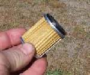
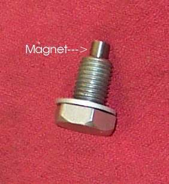

Some engines use a metal screen instead of, or as well as, a paper filter. A coarse screen often sits on the drain plug or cap. A fine screen sits in a chamber with a cover. A coarse screen still catches debris, and when it blocks it can starve the top of the engine of oil.
Safety
- Hot oil burns. Drain into a pan and keep the bike upright and steady.
- Use a torque wrench when you refit the plug. See Tighten drain and filter bolts without stripping them.
You need
- A clean tray, clean solvent and rags.
- A new drain plug washer or O-ring, and a new cover seal if the chamber has one.
- Fresh oil of the type in your manual.
Steps
- Drain the oil. Remove the drain plug or cap slowly. It may carry a spring and a screen. Note the order of the parts.
- Look at the screen and the magnet, if the plug has one. A thin grey film is normal. Chips, flakes or glittering metal are not: see Metal particles or flakes in the oil.
- Wash the screen in clean solvent and let it dry. Check the mesh for holes or tears.
- A fine screen in a chamber can be cleaned and reused if it is whole. Replace it if it is torn or crushed.
- Fit a new washer or O-ring. Refit the screen, spring and plug in the same order. Tighten to the manual torque.
- Refill with oil to the correct level and check for leaks.
Check your work
- The oil pressure or oil level light goes out after start.
- No seepage at the plug or cover.
If it did not fix the problem
- The light stays on: Oil pressure or oil level light is on.
- Check that oil reaches the top end: Check that oil is reaching the top of the engine.